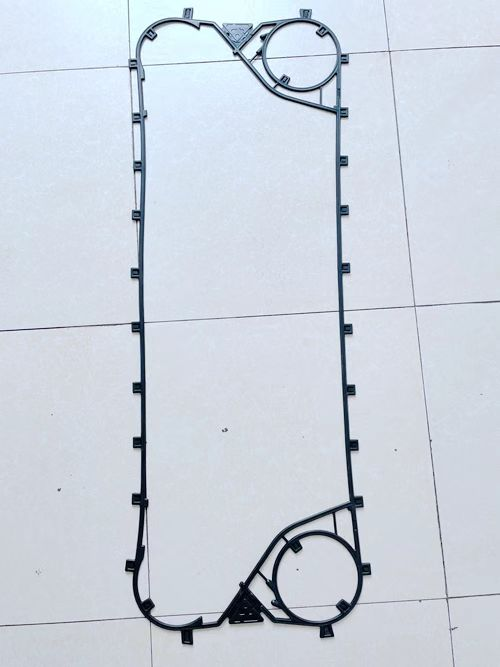
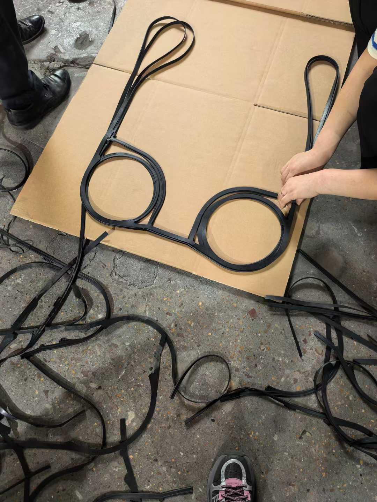

← 返回首页
传特板式换热器型号大全
传特品牌简介
传特（Tranter）是美国知名的板式换热器制造商，以高性价比和快捷服务著称。传特产品线涵盖GX和GC两大系列，广泛应用于暖通空调、工业冷却和能源管理领域。

主要型号系列
1. GX 系列
GX7, GX8, GX12, GX18, GX26, GX37, GX42, GX51, GX51(clip), GX60, GX64, GX85, GX91, GX100, GX118, GX140, GX145, GX180, GX205, GX265
GX系列为传特的主力产品线，采用独特板片设计，传热效率高，拆装方便。GX60是最常用的中型型号。
传特板式换热器产品实拍
2. GC 系列
GC8, GC9, GC12, GC16, GC26, GC26(clip), GC30, GC51, GC51(clip), GC54, GC55, GC60, GC226
GC系列为紧凑型设计，适合空间有限的安装场景。

传特板式换热器产品实拍
3. GL/GF系列
GL13, GL13(clip), GL230, GF97, GF187, 06T
GL系列为大型换热器，GF系列为自由流道设计，适合含颗粒介质。
选型建议
选择传特板式换热器时，建议综合考虑以下因素：
- 流量与热负荷：根据处理量和换热量选择对应的型号级别
- 介质特性：腐蚀性介质需选用相应的板片材质（316L、钛合金等）
- 安装空间：根据场地限制选择紧凑型或标准型
- 维护便利性：考虑拆装清洗的频率和操作空间
建议在选型前咨询传特官方或授权代理商，获取最新的技术参数和选型支持。
总结
传特拥有丰富的板式换热器型号体系，从微型到大型工业级全方位覆盖。本文列出的型号可作为快速参考，实际项目还需结合具体工况进行详细选型计算。如需备件采购或型号替换，请提供原始铭牌信息，我们将为您快速匹配对应产品。